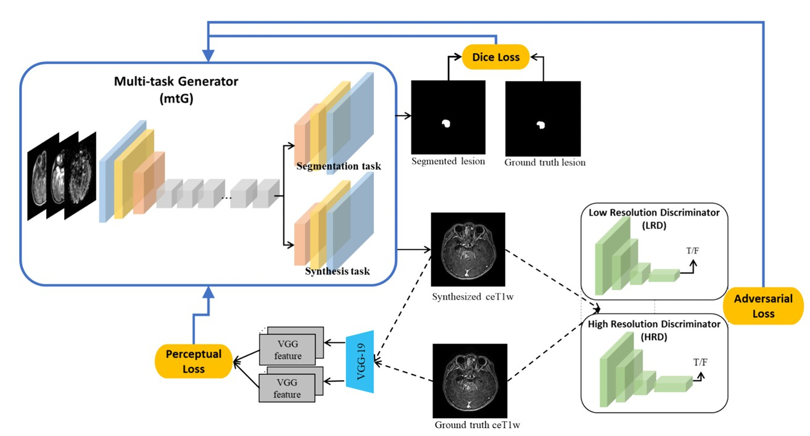
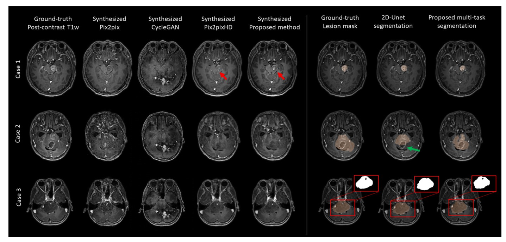
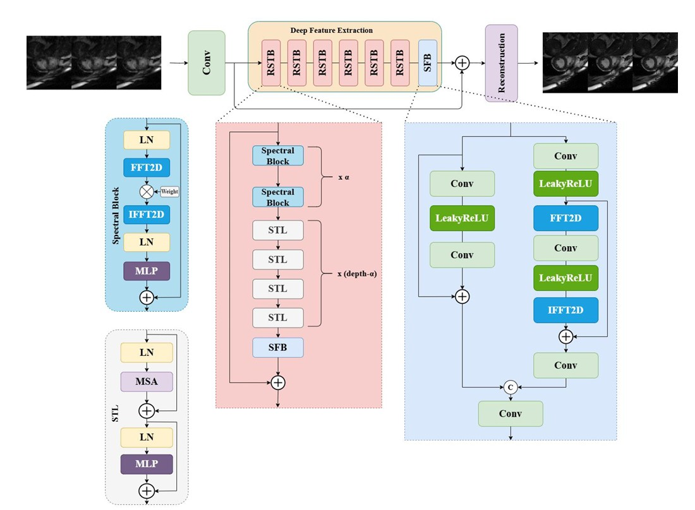
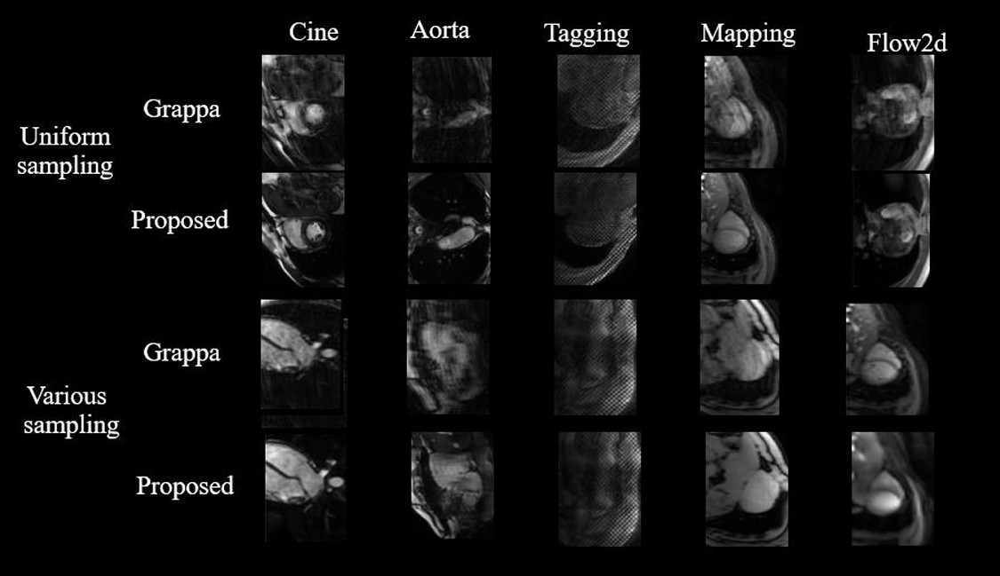
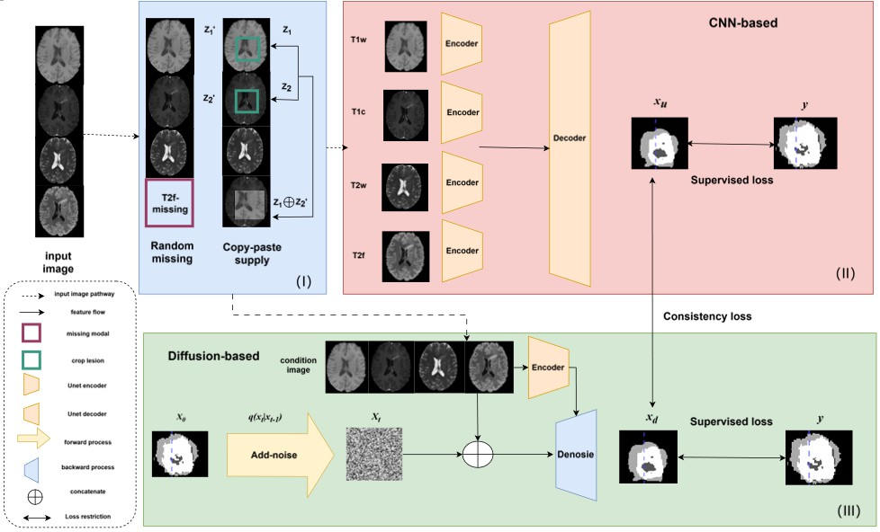
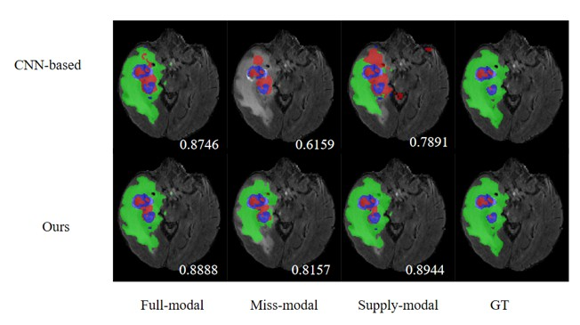

Welcome to my personal portfolio website!
I am a Master Student.
I specialize in Mathematics and applied mathematics, Machine learning, Computer vision, Medical Image Processing, Tumor Segmentation, Image Fusion, 3D Cardiac Reconstruction .
The diagnosis of brainstem gliomas is a high cost task in clinical practice, and the acquisition of image data required for diagnosis is difficult and of low quality. Therefore, how to quickly and accurately obtain high-quality data, accurately segment lesion areas, and maintain good segmentation results even in the absence of data is of great significance for clinical diagnosis..
 Multi contrast cardiac magnetic resonance imaging (CMR) involves obtaining multiple contrast weighted imaging sequences, providing valuable information for comprehensive assessment of cardiac structure and function. However, obtaining multiple contrast weighted images significantly increases scan time, leading to increased discomfort for patients and making them more susceptible to motion artifacts. Therefore, in order to reduce image acquisition time, there is an urgent need for efficient and reliable reconstruction methods to achieve accelerated and high-quality multi contrast CMR imaging. Accelerated cardiac magnetic resonance imaging (CMR) typically requires different k-space sampling trajectories and acceleration factors in different CMR protocols, making it urgent to establish a unified framework to establish consistent and reliable reconstructions in practical use.
 Brain tumor segmentation plays a critical role in clinical diagnosis and treatment. Although the development of deep learning has enabled automated segmentation, the clinical application often faces with missing or unavailable imaging modalities, making accurate segmentation of brain tumor from MRI images a challenging problem. To address this challenge, we propose a diffusion-guided multi-modal segmentation network has been proposed for brain tumor segmentation with better generalization to missing modalities. Besides, our framework can be utilized for semi-supervised learning to further exploit unlabeled data for training. Our method achieves superior performance compared to other segmentation methods and provides a potential solution to improving the robustness of models and segmentation outcomes in the presence of missing modalities.
 This study aims to generate post-contrast MR images reducing the exposure of gadolinium-based contrast agents (GBCAs) for brainstem glioma (BSG) detection, simultaneously delineating the BSG lesion, and providing high-resolution contrast information..
Read MoreEmail: hyx@123.com